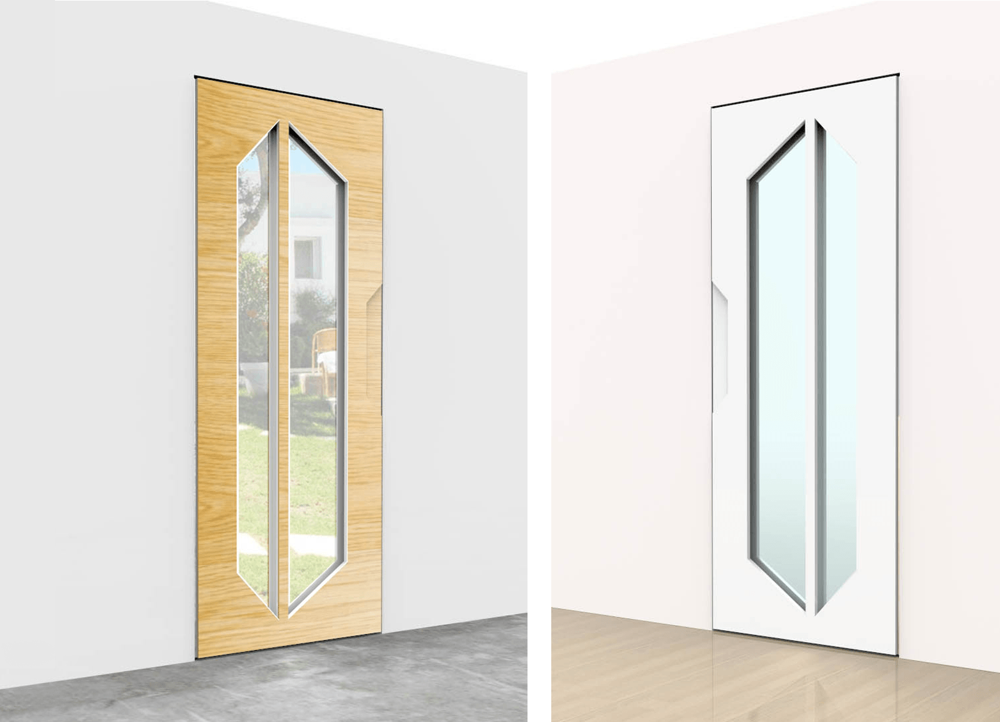
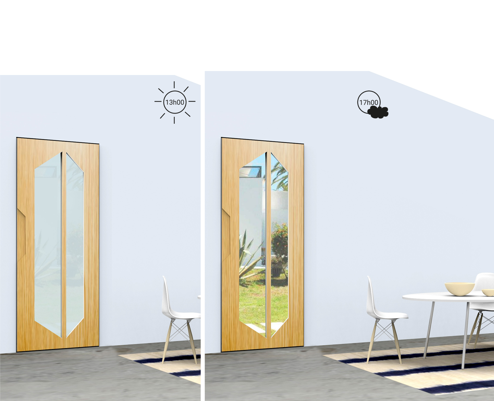
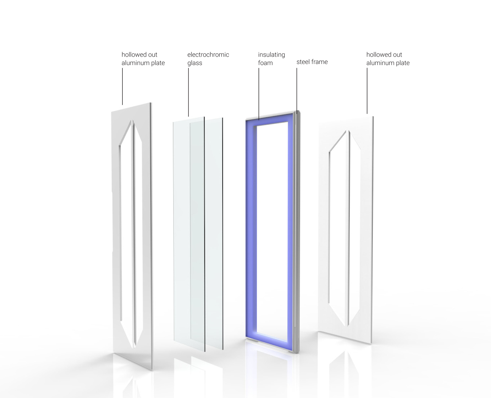
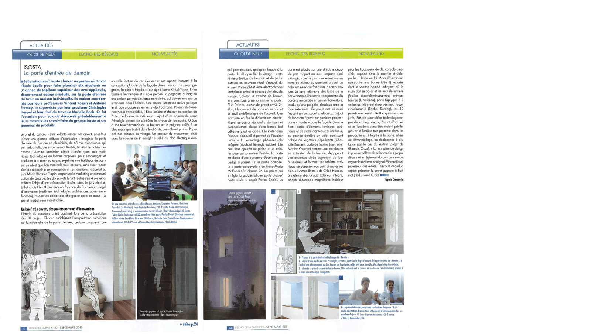

DOOR P2
First prize of the partnership École Boulle / Isosta companyReimagining the front door to breathe as if it were alive. This translucent design allows light from the outdoors to break through indoors.
aluminum / pvc / cedar wood, electrochromic glass, inox
H2000 x L900 x W80 mm

Breathe in light
Thanks to its electrochromic glass, the P2 door naturally regulates the brightness in the room according to daylight intensity.


Prototype
Working prototype displayed on the brand corner at the Batimat trade show Paris 2011

